Data Structures and Algorithms
with Object-Oriented Design Patterns in C++
Data Structures and Algorithms
with Object-Oriented Design Patterns in C++The Fibonacci numbers are given by following recurrence
Section  presents a recursive function to compute
the Fibonacci numbers by implementing directly Equation .
(See Program ).
The running time of that program is shown to be 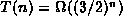.
presents a recursive function to compute
the Fibonacci numbers by implementing directly Equation .
(See Program ).
The running time of that program is shown to be 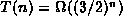.
In this section we present a divide-and-conquer style of algorithm for computing Fibonacci numbers. We make use of the following identities
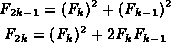
for  .
(See Exercise ).
Thus, we can rewrite Equation as
.
(See Exercise ).
Thus, we can rewrite Equation as
Program defines the function Fibonacci which
implements directly Equation .
Given n>1 it computes  by calling itself recursively
to compute 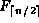 and 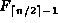
and then combines the two results as required.
by calling itself recursively
to compute 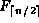 and 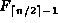
and then combines the two results as required.
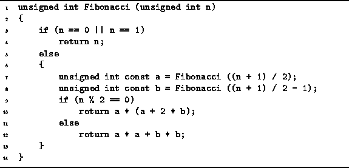
Program: Divide-and-Conquer Example--Computing Fibonacci Numbers
To determine a bound on the running time of the Fibonacci routine
in Program we assume that T(n) is a non-decreasing function.
I.e., 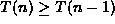 for all  .
Therefore 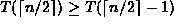.
Although the program works correctly for all values of n,
it is convenient to assume that n is a power of 2.
In this case, the running time of the routine is upper-bounded by T(n)
where
.
Therefore 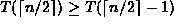.
Although the program works correctly for all values of n,
it is convenient to assume that n is a power of 2.
In this case, the running time of the routine is upper-bounded by T(n)
where
Equation is easily solved using repeated substitution:
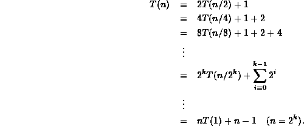
Thus, T(n)=2n-1=O(n).
 Copyright © 1997 by Bruno R. Preiss, P.Eng. All rights reserved.
Copyright © 1997 by Bruno R. Preiss, P.Eng. All rights reserved.